##
## Attaching package: 'geojsonio'## The following object is masked from 'package:base':
##
## pretty## Linking to GEOS 3.7.2, GDAL 2.4.2, PROJ 5.2.0## Package 'mclust' version 5.4.5
## Type 'citation("mclust")' for citing this R package in publications.library( tmap ) # theme maps
library( ggplot2 ) # graphing
library( ggthemes ) # nice formats for ggplots
library( dplyr ) # data wrangling ##
## Attaching package: 'dplyr'## The following objects are masked from 'package:stats':
##
## filter, lag## The following objects are masked from 'package:base':
##
## intersect, setdiff, setequal, unionlibrary( pander ) # formatting RMD tables
library( tidycensus )
library( cartogram ) # spatial maps w/ tract size bias reduction
library( maptools ) # spatial object manipulation ## Checking rgeos availability: TRUEYou can select a city from the list of large MSAs.
To get Census data on the city you will first need to identify all of the counties that comprise the MSA. You can look this information up through MSA to FIPS crosswalks provided by the National Bureau for Economic Research (NBER): https://www.nber.org/data/cbsa-fips-county-crosswalk.html
I have added the file to GitHub for ease of access.
crosswalk <- read.csv( "https://raw.githubusercontent.com/DS4PS/cpp-529-master/master/data/cbsatocountycrosswalk.csv", stringsAsFactors=F, colClasses="character" )
# search for citie names by strings, use the ^ anchor for "begins with"
grep( "^CHI", crosswalk$msaname, value=TRUE ) ## [1] "CHICO-PARADISE, CA" "CHICAGO, IL" "CHICAGO, IL"
## [4] "CHICAGO, IL" "CHICAGO, IL" "CHICAGO, IL"
## [7] "CHICAGO, IL" "CHICAGO, IL" "CHICAGO, IL"
## [10] "CHICAGO, IL"## [1] "MINNESOTA" "MINNEAPOLIS-ST. PAUL, MN-WI"
## [3] "MINNESOTA" "MINNESOTA"
## [5] "MINNESOTA" "MINNESOTA"
## [7] "MINNESOTA" "MINNESOTA"
## [9] "MINNEAPOLIS-ST. PAUL, MN-WI" "MINNESOTA"
## [11] "MINNESOTA" "MINNEAPOLIS-ST. PAUL, MN-WI"
## [13] "MINNESOTA" "MINNESOTA"
## [15] "MINNESOTA" "MINNESOTA"
## [17] "MINNEAPOLIS-ST. PAUL, MN-WI" "MINNESOTA"
## [19] "MINNESOTA" "MINNESOTA"
## [21] "MINNESOTA" "MINNESOTA"
## [23] "MINNESOTA" "MINNESOTA"
## [25] "MINNEAPOLIS-ST. PAUL, MN-WI" "MINNESOTA"
## [27] "MINNEAPOLIS-ST. PAUL, MN-WI" "MINNESOTA"
## [29] "MINNESOTA" "MINNESOTA"
## [31] "MINNESOTA" "MINNESOTA"
## [33] "MINNESOTA" "MINNESOTA"
## [35] "MINNESOTA" "MINNESOTA"
## [37] "MINNESOTA" "MINNESOTA"
## [39] "MINNESOTA" "MINNESOTA"
## [41] "MINNESOTA" "MINNESOTA"
## [43] "MINNESOTA" "MINNESOTA"
## [45] "MINNESOTA" "MINNESOTA"
## [47] "MINNESOTA" "MINNESOTA"
## [49] "MINNESOTA" "MINNESOTA"
## [51] "MINNESOTA" "MINNESOTA"
## [53] "MINNESOTA" "MINNESOTA"
## [55] "MINNESOTA" "MINNESOTA"
## [57] "MINNEAPOLIS-ST. PAUL, MN-WI" "MINNESOTA"
## [59] "MINNESOTA" "MINNESOTA"
## [61] "MINNESOTA" "MINNESOTA"
## [63] "MINNESOTA" "MINNEAPOLIS-ST. PAUL, MN-WI"
## [65] "MINNEAPOLIS-ST. PAUL, MN-WI" "MINNESOTA"
## [67] "MINNESOTA" "MINNESOTA"
## [69] "MINNESOTA" "MINNESOTA"
## [71] "MINNESOTA" "MINNESOTA"
## [73] "MINNESOTA" "MINNESOTA"
## [75] "MINNEAPOLIS-ST. PAUL, MN-WI" "MINNESOTA"
## [77] "MINNESOTA" "MINNESOTA"
## [79] "MINNEAPOLIS-ST. PAUL, MN-WI" "MINNESOTA"
## [81] "MINNESOTA" "MINNEAPOLIS-ST. PAUL, MN-WI"
## [83] "MINNEAPOLIS-ST. PAUL, MN-WI"Select all of your county fips. To use them in the TidyCenss package you will need to split the state and county:
To create a Dorling cartogram we need a shapefile and a population count. We can get both through the Census download that includes simple features.
## To install your API key for use in future sessions, run this function with `install = TRUE`.library( tidycensus )
# census_api_key("YOUR KEY GOES HERE")
# key <- "abc123"
# census_api_key( key )these.msp <- crosswalk$msaname == "MINNEAPOLIS-ST. PAUL, MN-WI"
these.fips <- crosswalk$fipscounty[ these.msp ]
these.fips <- na.omit( these.fips )
state.fips <- substr( these.fips, 1, 2 )
county.fips <- substr( these.fips, 3, 5 )
msp.pop <-
get_acs( geography = "tract", variables = "B01003_001",
state = "27", county = county.fips[state.fips=="27"], geometry = TRUE ) %>%
select( GEOID, estimate ) %>%
rename( POP=estimate )## Getting data from the 2013-2017 5-year ACS## Downloading feature geometry from the Census website. To cache shapefiles for use in future sessions, set `options(tigris_use_cache = TRUE)`.URL <- "https://github.com/DS4PS/cpp-529-master/raw/master/data/ltdb_std_2010_sample.rds"
census.dat <- readRDS(gzcon(url( URL )))
# can merge an sf object and data.frame
msp <- merge( msp.pop, census.dat, by.x="GEOID", by.y="tractid" )
# make sure there are no empty polygons
msp <- msp[ ! st_is_empty( msp ) , ]DATA DICTIONARY
| LABEL | VARIABLE |
|---|---|
| tractid | GEOID |
| pnhwht12 | Percent white, non-Hispanic |
| pnhblk12 | Percent black, non-Hispanic |
| phisp12 | Percent Hispanic |
| pntv12 | Percent Native American race |
| pfb12 | Percent foreign born |
| polang12 | Percent speaking other language at home, age 5 plus |
| phs12 | Percent with high school degree or less |
| pcol12 | Percent with 4-year college degree or more |
| punemp12 | Percent unemployed |
| pflabf12 | Percent female labor force participation |
| pprof12 | Percent professional employees |
| pmanuf12 | Percent manufacturing employees |
| pvet12 | Percent veteran |
| psemp12 | Percent self-employed |
| hinc12 | Median HH income, total |
| incpc12 | Per capita income |
| ppov12 | Percent in poverty, total |
| pown12 | Percent owner-occupied units |
| pvac12 | Percent vacant units |
| pmulti12 | Percent multi-family units |
| mrent12 | Median rent |
| mhmval12 | Median home value |
| p30old12 | Percent structures more than 30 years old |
| p10yrs12 | Percent HH in neighborhood 10 years or less |
| p18und12 | Percent 17 and under, total |
| p60up12 | Percent 60 and older, total |
| p75up12 | Percent 75 and older, total |
| pmar12 | Percent currently married, not separated |
| pwds12 | Percent widowed, divorced and separated |
| pfhh12 | Percent female-headed families with children |
## [1] "SpatialPolygonsDataFrame"
## attr(,"package")
## [1] "sp"# project map and remove empty tracts
msp.sp <- spTransform( msp.sp, CRS("+init=epsg:3395"))
msp.sp <- msp.sp[ msp.sp$POP != 0 & (! is.na( msp.sp$POP )) , ]
# convert census tract polygons to dorling cartogram
# no idea why k=0.03 works, but it does - default is k=5
msp.sp$pop.w <- msp.sp$POP / 9000 # max(msp.sp$POP) # standardizes it to max of 1.5
msp_dorling <- cartogram_dorling( x=msp.sp, weight="pop.w", k=0.05 )
d1 <- msp_dorling@dataWe will use the same set of variables as last week. The data is transformed into z-score so that they are all on similar scales.
keep.these <- c("pnhwht12", "pnhblk12", "phisp12", "pntv12", "pfb12", "polang12",
"phs12", "pcol12", "punemp12", "pflabf12", "pprof12", "pmanuf12",
"pvet12", "psemp12", "hinc12", "incpc12", "ppov12", "pown12",
"pvac12", "pmulti12", "mrent12", "mhmval12", "p30old12", "p10yrs12",
"p18und12", "p60up12", "p75up12", "pmar12", "pwds12", "pfhh12")
d2 <- select( d1, keep.these )
d3 <- apply( d2, 2, scale )
head( d3[,1:6] ) %>% pander()| pnhwht12 | pnhblk12 | phisp12 | pntv12 | pfb12 | polang12 |
|---|---|---|---|---|---|
| 0.9663 | -0.5875 | -0.7391 | -0.4529 | -1.054 | -0.9999 |
| 1.01 | -0.7305 | -0.7099 | -0.1402 | -1.038 | -1.098 |
| 1.029 | -0.7228 | -0.728 | -0.009282 | -0.8826 | -1.072 |
| 0.8438 | -0.7382 | -0.7321 | -0.1111 | -0.9578 | -0.4979 |
| 0.8701 | -0.7382 | -0.6446 | 1.074 | -1.146 | -1.03 |
| 1.005 | -0.7237 | -0.7877 | -0.4529 | -0.8802 | -0.8248 |
We transform all of the variables to z scorse so they are on the same scale while clustering. This ensures that each census variable has equal weight. Z-scores typically range from about -3 to +3 with a mean of zero.
keep.these <- c("pnhwht12", "pnhblk12", "phisp12", "pntv12", "pfb12", "polang12",
"phs12", "pcol12", "punemp12", "pflabf12", "pprof12", "pmanuf12",
"pvet12", "psemp12", "hinc12", "incpc12", "ppov12", "pown12",
"pvac12", "pmulti12", "mrent12", "mhmval12", "p30old12", "p10yrs12",
"p18und12", "p60up12", "p75up12", "pmar12", "pwds12", "pfhh12")
d2 <- select( d1, keep.these )
d3 <- apply( d2, 2, scale )For more details on cluster analysis visit the mclust tutorial.
# library( mclust )
set.seed( 1234 )
fit <- Mclust( d3 )
msp_dorling$cluster <- as.factor( fit$classification )
summary( fit )## ----------------------------------------------------
## Gaussian finite mixture model fitted by EM algorithm
## ----------------------------------------------------
##
## Mclust VVE (ellipsoidal, equal orientation) model with 7 components:
##
## log-likelihood n df BIC ICL
## -14956.35 749 861 -35611.43 -35692.91
##
## Clustering table:
## 1 2 3 4 5 6 7
## 89 160 81 97 81 192 49Build the charts to compare census characteristics across the groups.
df.pct <- sapply( d2, ntile, 100 )
d4 <- as.data.frame( df.pct )
d4$cluster <- as.factor( paste0("GROUP-",fit$classification) )
num.groups <- length( unique( fit$classification ) )
stats <-
d4 %>%
group_by( cluster ) %>%
summarise_each( funs(mean) )## Warning: funs() is soft deprecated as of dplyr 0.8.0
## Please use a list of either functions or lambdas:
##
## # Simple named list:
## list(mean = mean, median = median)
##
## # Auto named with `tibble::lst()`:
## tibble::lst(mean, median)
##
## # Using lambdas
## list(~ mean(., trim = .2), ~ median(., na.rm = TRUE))
## This warning is displayed once per session.t <- data.frame( t(stats), stringsAsFactors=F )
names(t) <- paste0( "GROUP.", 1:num.groups )
t <- t[-1,]
for( i in 1:num.groups )
{
z <- t[,i]
plot( rep(1,30), 1:30, bty="n", xlim=c(-75,100),
type="n", xaxt="n", yaxt="n",
xlab="Percentile", ylab="",
main=paste("GROUP",i) )
abline( v=seq(0,100,25), lty=3, lwd=1.5, col="gray90" )
segments( y0=1:30, x0=0, x1=100, col="gray70", lwd=2 )
text( -0.2, 1:30, data.dictionary$VARIABLE[-1], cex=0.85, pos=2 )
points( z, 1:30, pch=19, col="firebrick", cex=1.5 )
axis( side=1, at=c(0,50,100), col.axis="gray", col="gray" )
}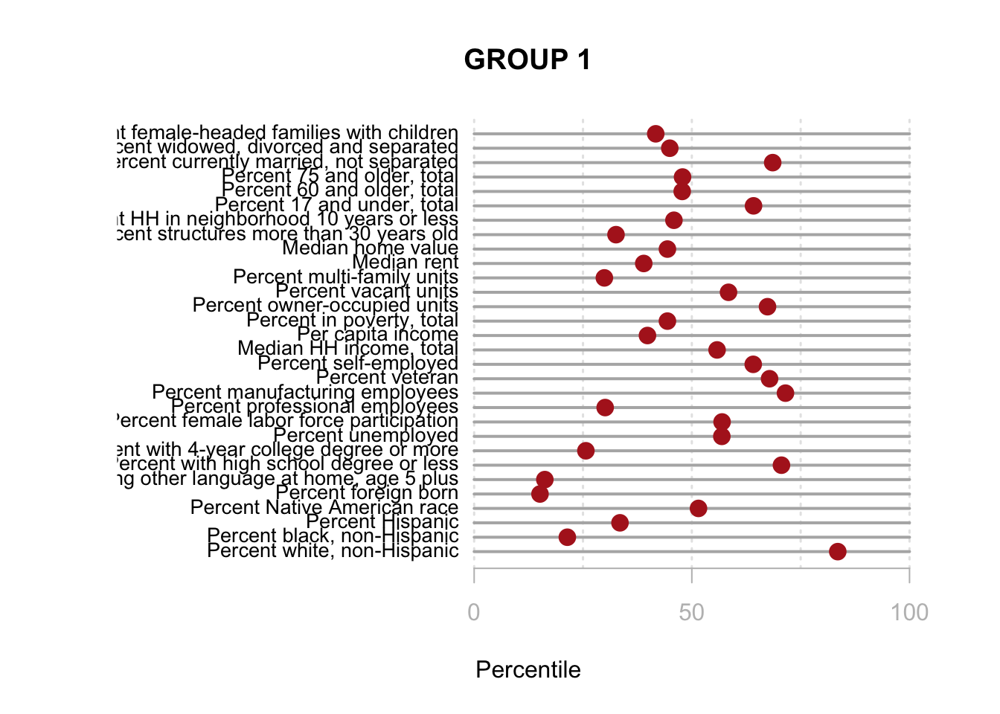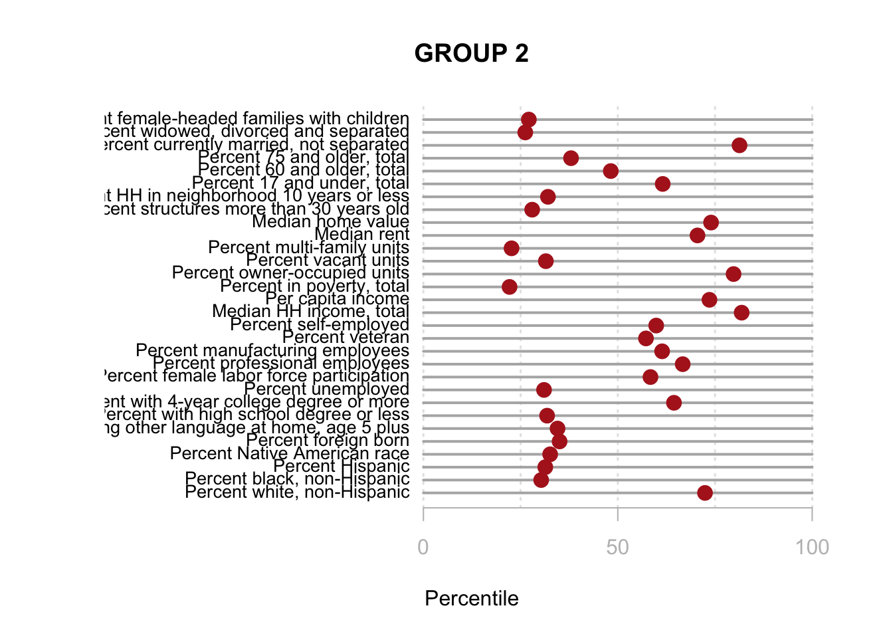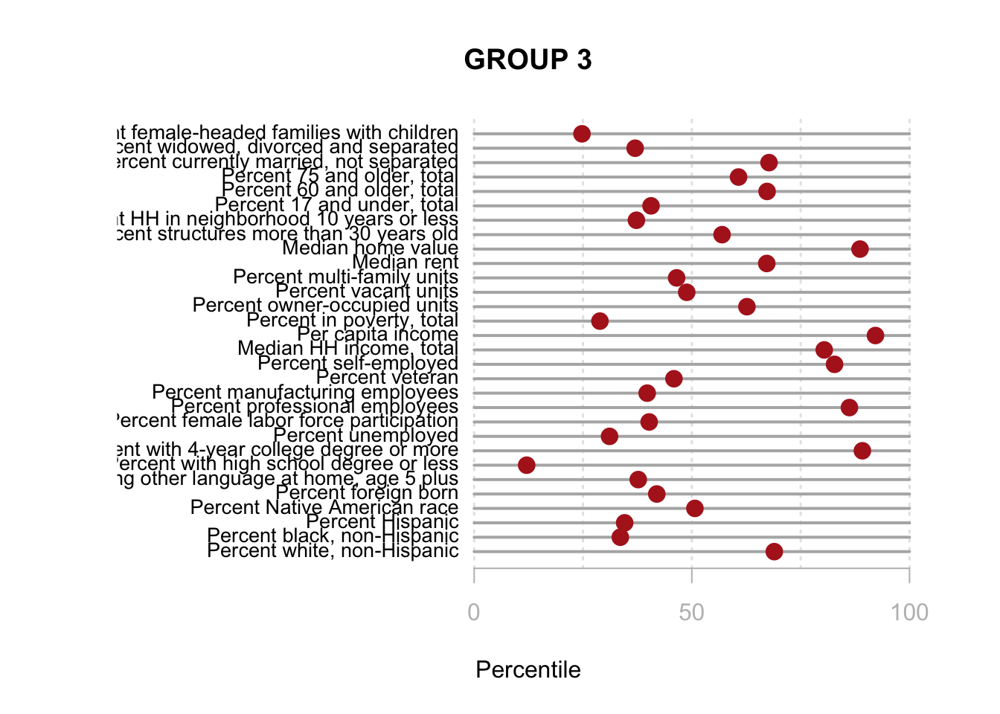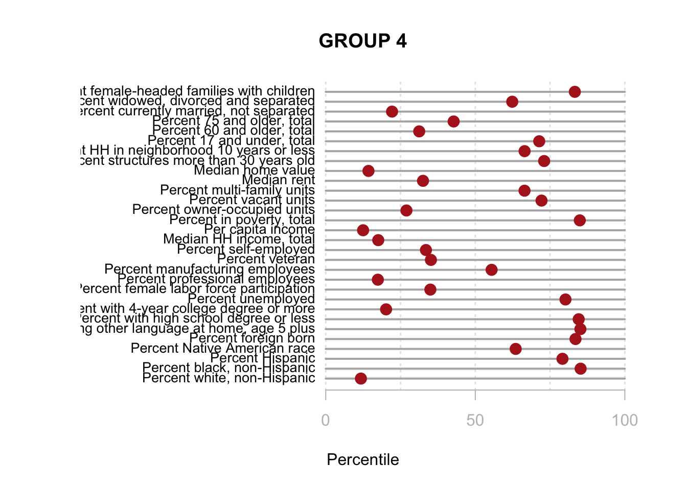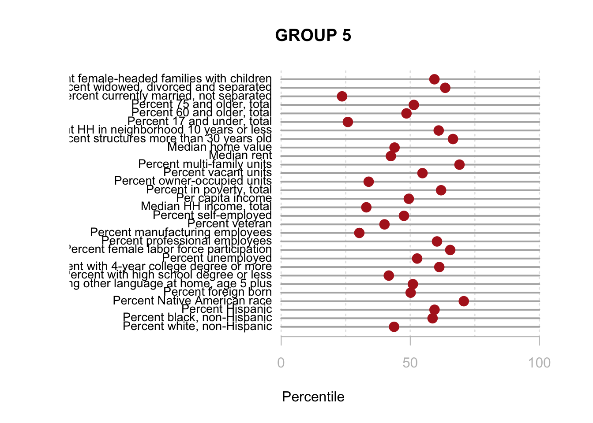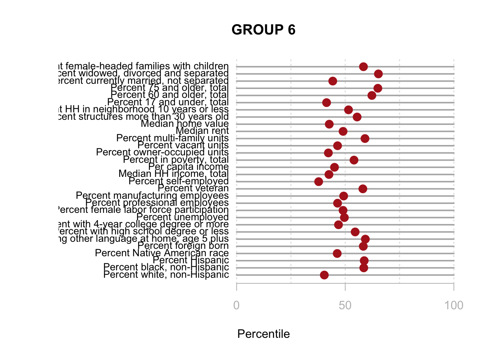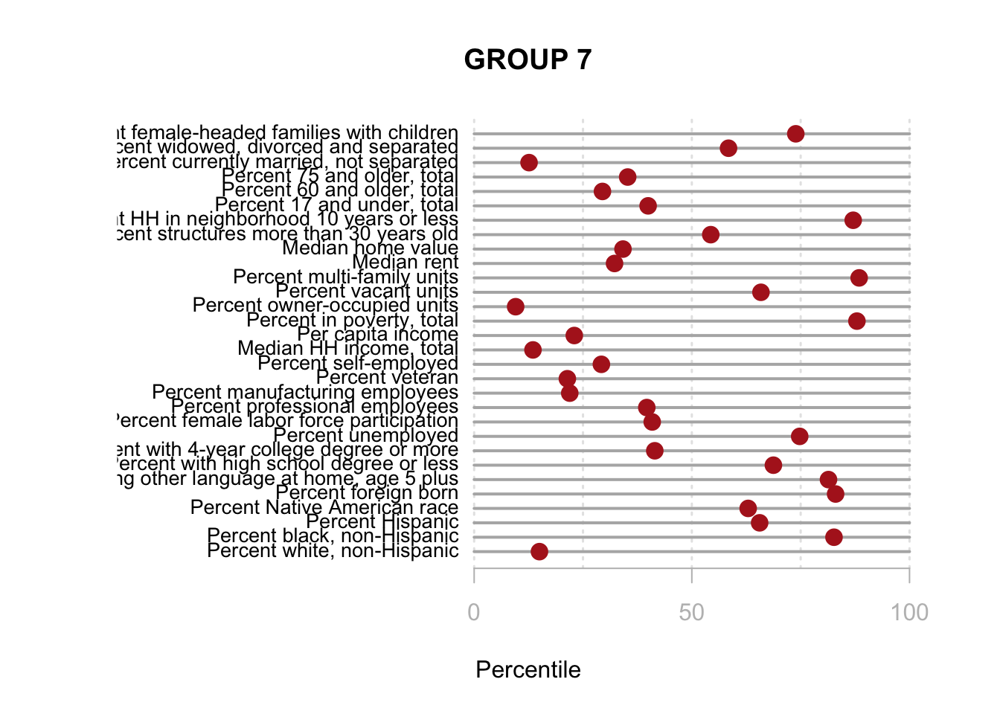
You are now ready to identify meaningful labels for your clusters!
I arbitrarily selected three census variables to compare methods. Here we are using % of population 18 and under, % of female labor force participation, and household income.
| LABEL | VARIABLE |
|---|---|
| tractid | GEOID |
| pnhwht12 | Percent white, non-Hispanic |
| punemp12 | Percent unemployed |
| hinc12 | Per capita income |
For more details on cluster analysis visit the mclust tutorial.
# library( mclust )
set.seed( 1234 )
fit2 <- Mclust( d3 )
msp_dorling$cluster2 <- as.factor( fit2$classification )
summary( fit2 )## ----------------------------------------------------
## Gaussian finite mixture model fitted by EM algorithm
## ----------------------------------------------------
##
## Mclust VVI (diagonal, varying volume and shape) model with 5 components:
##
## log-likelihood n df BIC ICL
## -2245.993 749 34 -4717.024 -5096.015
##
## Clustering table:
## 1 2 3 4 5
## 187 290 137 100 35Build the charts to compare census characteristics across the groups.
df.pct <- sapply( d2, ntile, 100 )
d4 <- as.data.frame( df.pct )
d4$cluster2 <- as.factor( paste0("GROUP-",fit2$classification) )
num.groups <- length( unique( fit2$classification ) )
stats <-
d4 %>%
group_by( cluster2 ) %>%
summarise_each( funs(mean) )
t <- data.frame( t(stats), stringsAsFactors=F )
names(t) <- paste0( "GROUP.", 1:num.groups )
t <- t[-1,]
for( i in 1:num.groups )
{
z <- t[,i]
plot( rep(1,3), 1:3, bty="n", xlim=c(-75,100),
type="n", xaxt="n", yaxt="n",
xlab="Percentile", ylab="",
main=paste("GROUP",i) )
abline( v=seq(0,100,25), lty=3, lwd=1.5, col="gray90" )
segments( y0=1:3, x0=0, x1=100, col="gray70", lwd=2 )
text( -0.2, 1:3, data.dictionary$VARIABLE[-1], cex=0.85, pos=2 )
points( z, 1:3, pch=19, col="firebrick", cex=1.5 )
axis( side=1, at=c(0,50,100), col.axis="gray", col="gray" )
}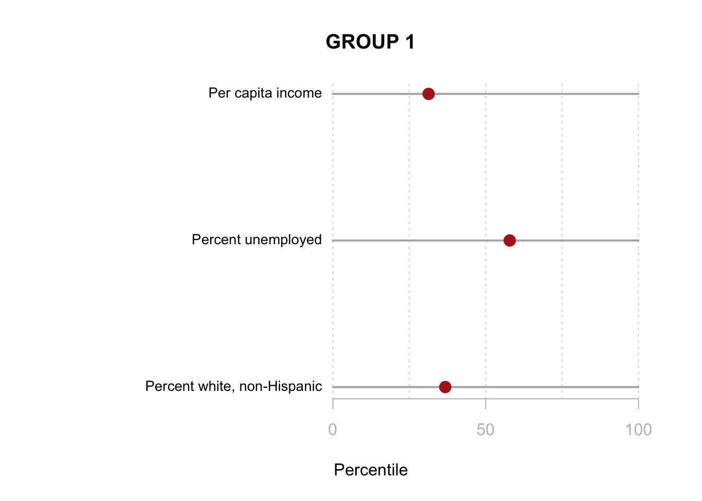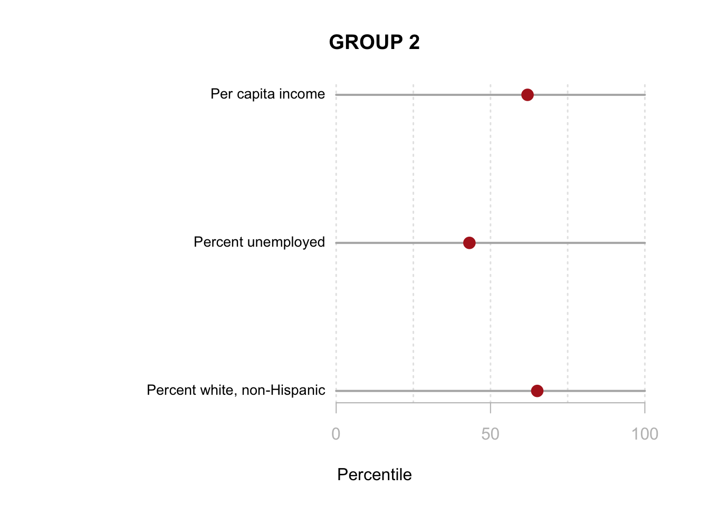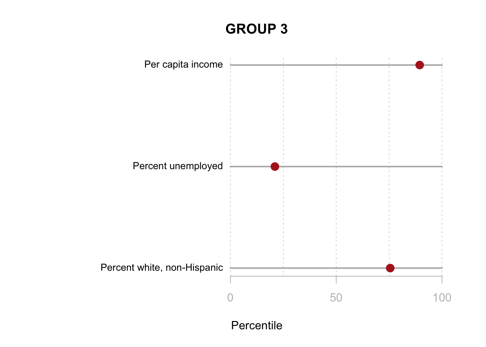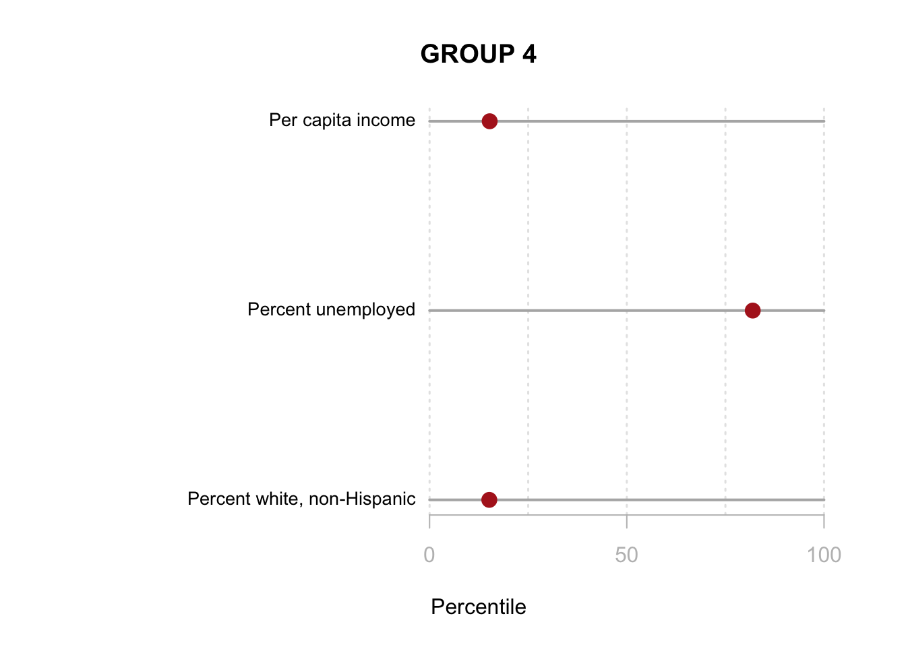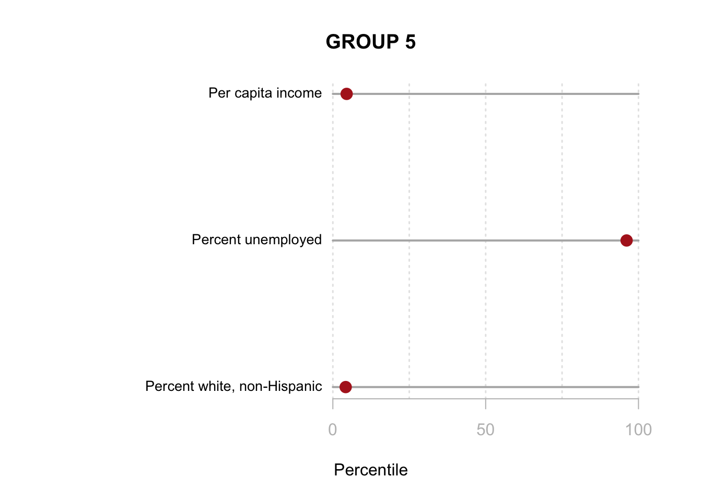
## tmap mode set to plotting## tmap style set to "cobalt"## other available styles are: "white", "gray", "natural", "col_blind", "albatross", "beaver", "bw", "classic", "watercolor"# user-defined bounding box to move slocer to subjects
bb <- st_bbox( c( xmin = -10451823, xmax = -10324525,
ymax = 5639769, ymin = 5491665 ),
crs = st_crs("+init=epsg:3395"))
tm1 <-
tm_shape( msp_dorling, bbox=bb ) +
tm_polygons( col="cluster", palette="Accent" )
tm2 <-
tm_shape( msp_dorling, bbox=bb ) +
tm_polygons( col="cluster2", palette="Accent" )
tmap_arrange( tm1, tm2)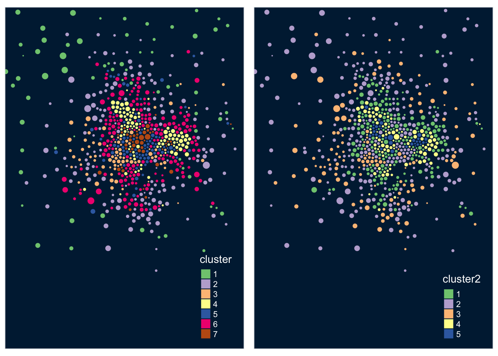